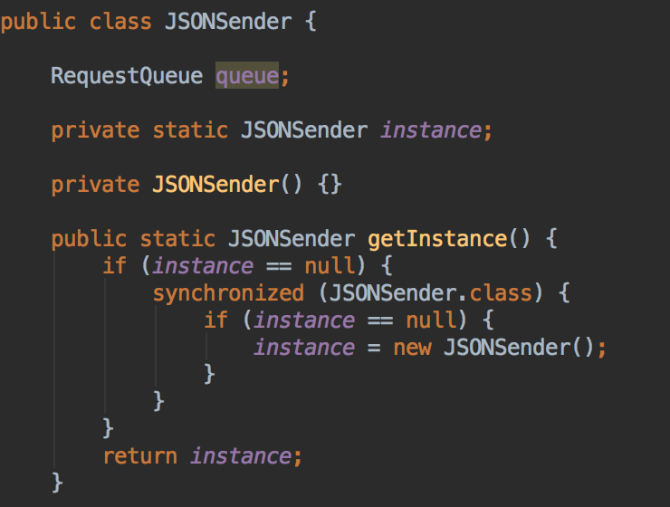
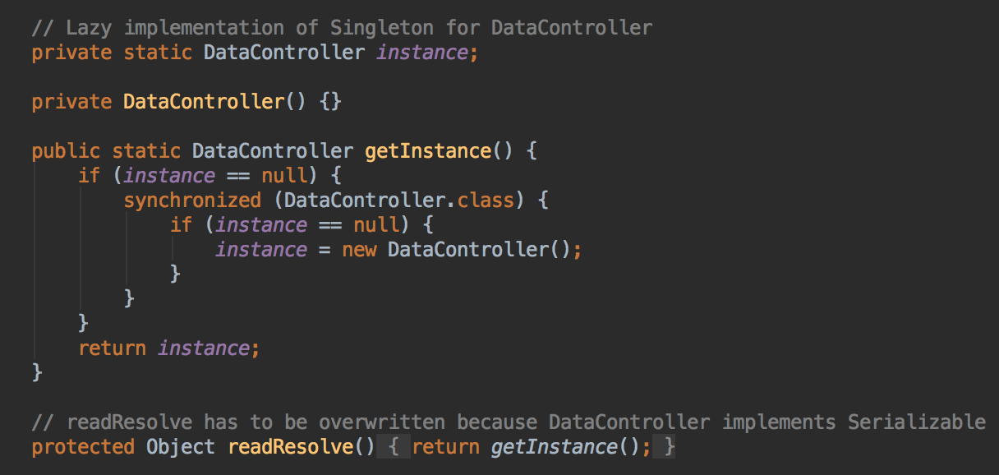
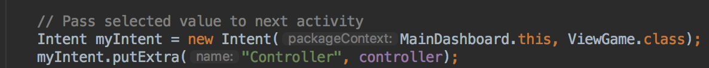
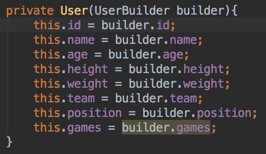
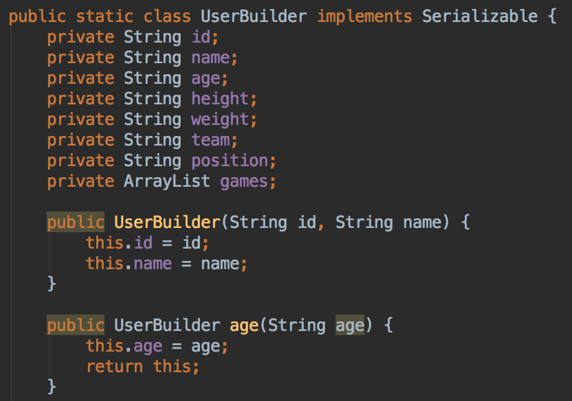
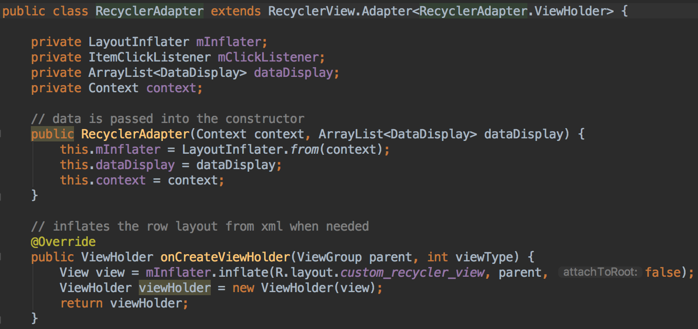

Our system is made up of different components that make up a set of tools. The following subsections make up the system as a whole:
The Json file generator, created using Java, emulates data from a Fitbit API. A bash script was used to automate the process.
Our visualiser is a java application that takes in sample IMU sensor data and displays it on a graph. Both the gyroscope and accelerometer data can be formatted using the visualiser. To access the visualiser, the user uses a simple GUI created using SWING.
On the end user side of the application, we created an Android Application in Android Studio. The application is integrated with the Json file generator, and displays and analyses the emulated data.
We integrated our interface with open source code we found online.
Singleton
Throughout the app, we are restricting the DataController and JSONSender to only have one instance per session. This means that all the data generation and calculations are handled by the same controller, and everything that has to do with post requests is done by the same sender object whenever a change occurs within the JSON file stored and has to be sent to the server and update the database. To further support the memory management of our application, we use a lazy implementation of the singletons so that the instance is only created when the app requests access to the controller or sender object (via the getInstance() method).
 Dependency Injection
Due to the fact that we are using singletons, we need these objects to be accessible in all activities that require any information their instances. By using intents, we are passing these objects from one activity to another, so when one activity requires access to that object, everything is there and ready for further interactions with these objects.
Builder
One of the classes that is found in our project is the User class. It contains all the information that we need from a user and all of this is stored in the json file. Due to the fact that it has many fields, we wanted to separate the construction of this more complex objects from its representation. Thus, in case we want to create numerous users, the same construction process is used to create different representations. All from the above is handled by the UserBuilder class:
 Adapter
After we went through the design implementation of our code, we realized that some classes were incompatible with each other, so no interaction was possible between one and another. Therefore, we included several adapters in our code to ensure a good compatibility between different resources and that the connections are without errors. One example is the RecyclerAdapter class, used to create all our layers:
MVC
This design pattern is at the foundation of our project. Throughout the entire project we had in mind the objective of having a reusable code, so that other developers could come and use what we have built and improve it. The MVC pattern enables us to achieve this goal. Therefore, our application has classes that: